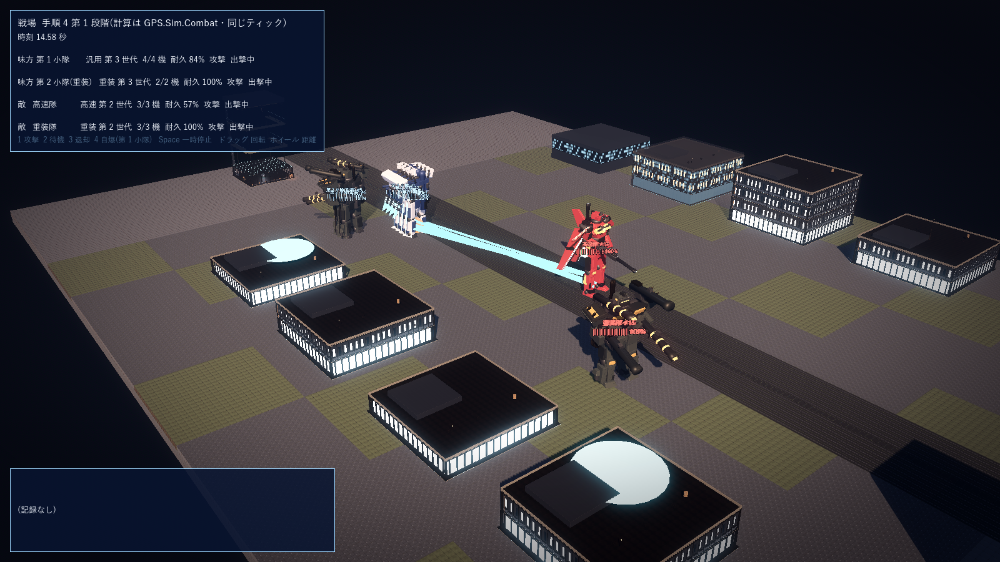
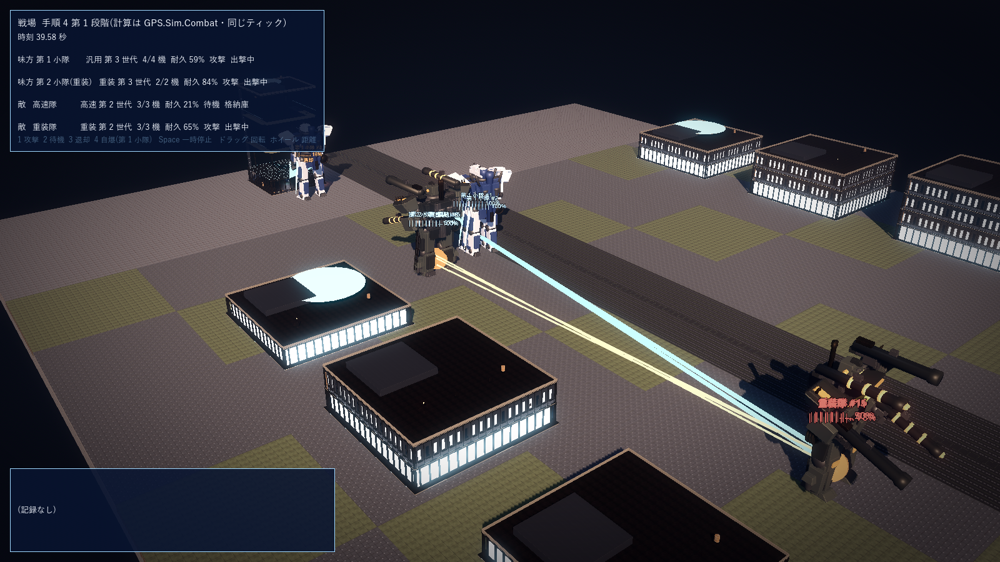
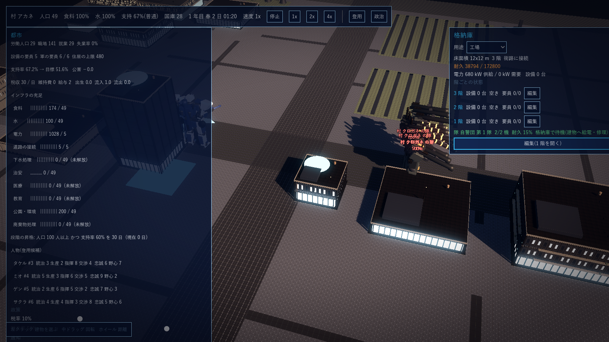
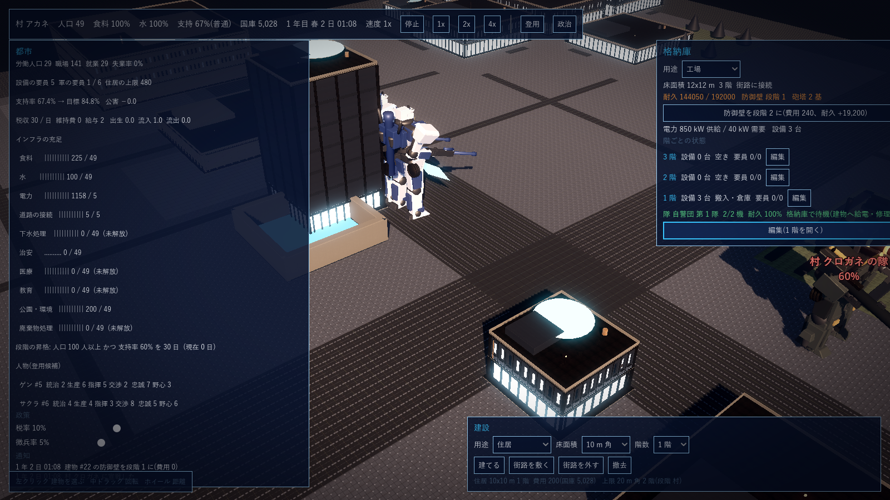
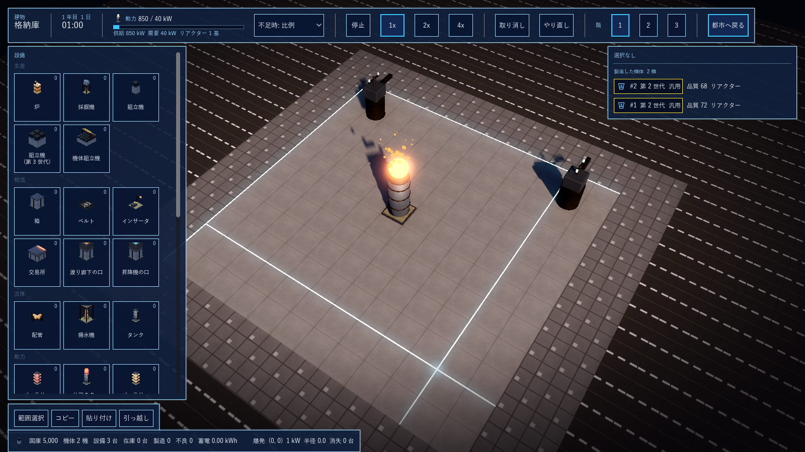
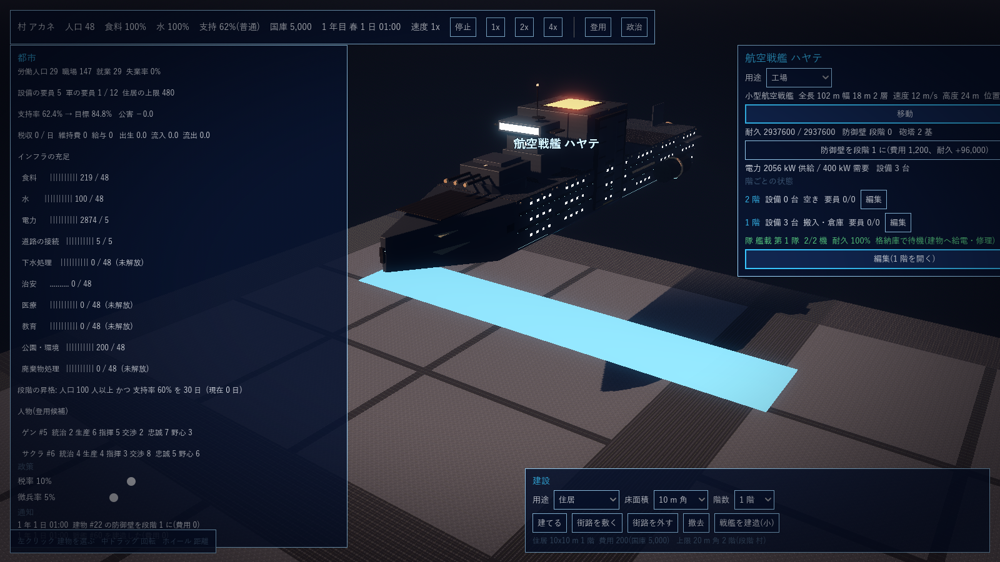
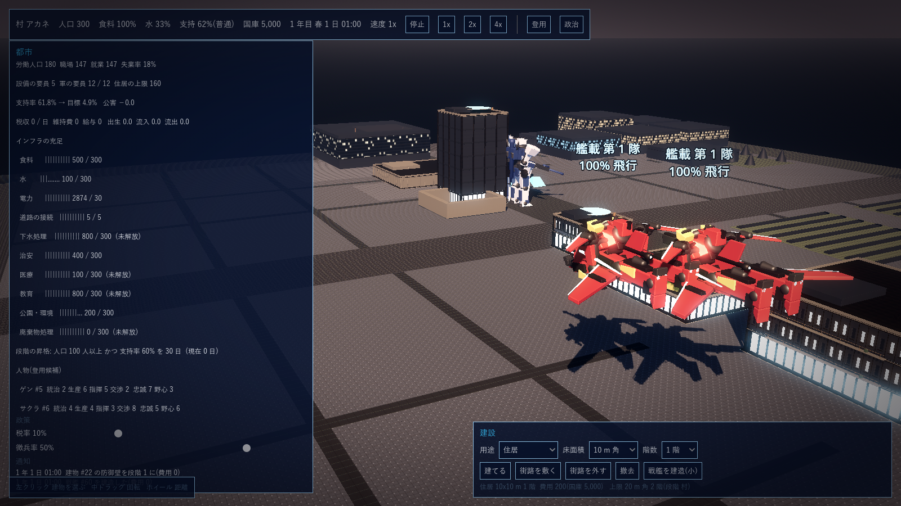
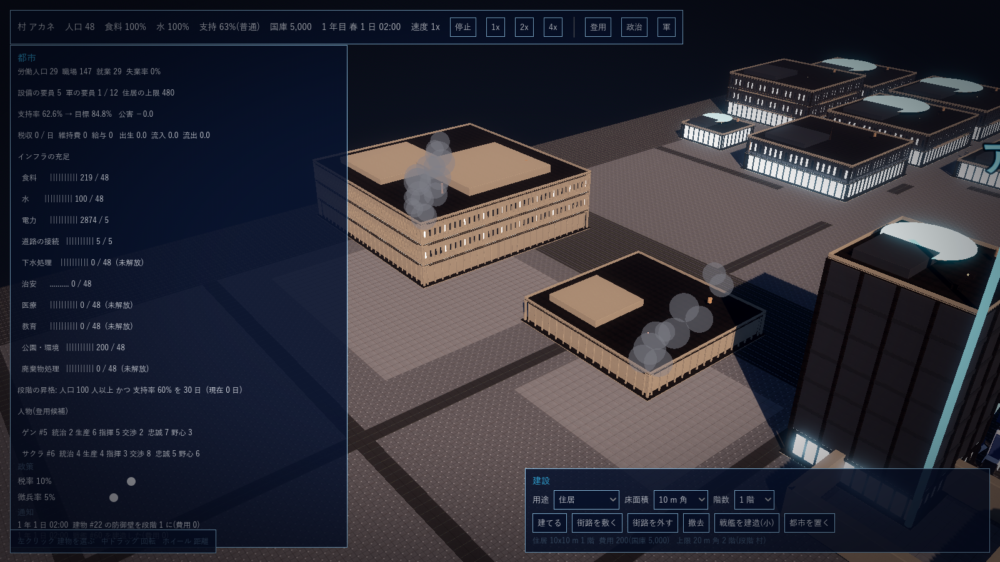
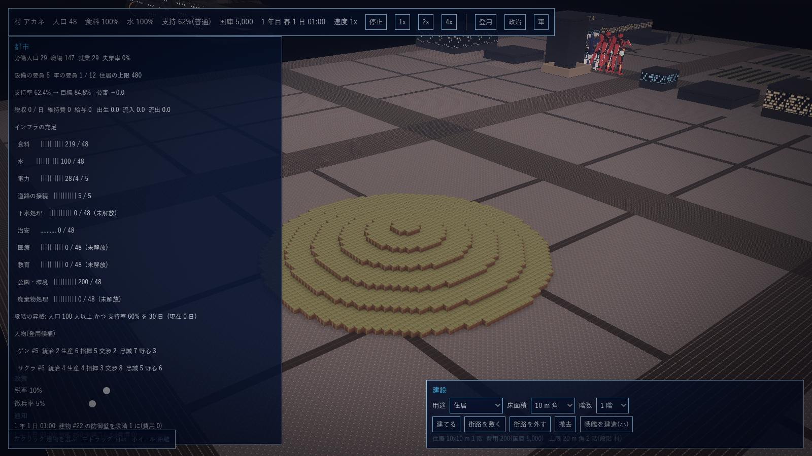

G16 手順4 軍と戦闘
2026-10-15 作成、同日回答で確定。正典の決定(G2 の Unit、Going Medieval 方式、武装の規則、ステルス、過負荷の爆弾、制御基板)に沿う。
1. 着手前の決定事項(2026-10-15 確定)
回答で変わった点: #1 遮蔽は第 1 段階では計算しない(計算が重いため。将来は街区単位の粗い格子で安価に判定)。#2・#8 戦闘は機体のみで人間の戦闘は無い(人間は労働と政治の側)。#5 ダメージは単純な耐久(HP)制にし、装甲値は持たない(系統と世代の差は耐久と火力に畳み込む)。追加: 待機中の戦闘機体は、格納庫にいる間はその建物の設備に給電し(リアクターの出力が建物の供給に加わる)、屋外ではバッテリー駆動の機体に給電する。
| # | 項目 | 案 | 根拠・備考 |
|---|---|---|---|
| 1 | 戦場の空間 | 都市と同じ地図(マクロ)の上で戦う。1 セル = 1 m、機体と隊は位置と向きを持つ。別画面の戦場は作らない。遮蔽は第 1 段階では無し(将来は街区単位の粗い格子で) | 正典: Going Medieval 方式 |
| 2 | 隊(Unit)の構成 | 隊 = 同じ系統・同じ世代の機体 1〜12 機。人間の兵は無い。隊は機数と平均状態(耐久・弾薬・電力)を持ち、戦場では代表機 1 体を描く(機数は数字で示す) | 正典: G2 の Unit(人数 + 平均状態)、10 万の軍は粒度を段階で変える |
| 3 | 隊への命令 | 移動(目標地点)、攻撃(目標の隊または建物)、待機(その場で応戦)、退却(帰還先の格納庫へ)、陣形(横列 / 縦列 / 散開)。個々の機体は制御基板のプログラムで動く(索敵・交戦・退却・優先目標・武器) | 正典: 隊の単位で指揮、個人は指揮しない |
| 4 | 機体の性能値 | 部品の品質と系統から導く。耐久 = 胴 + 腕 2 + 脚 2 の品質の和 × 系統係数(重装 1.8 / 汎用 1.0 / 高速 0.6。装甲は耐久に畳み込む)。速度 = 脚と背部の品質の平均 × 系統係数(高速 1.6 / 汎用 1.0 / 重装 0.6)。索敵 = 頭の品質 × 2 m(品質 70 で 140 m)。火力 = 武装の種別の基礎値 × 武装の品質 / 70。世代は全体に 1 + 0.1 × 世代 の倍率 | 数値は data の json で調整 |
| 5 | 射撃と命中 | 命中率 = 武器の精度 × 距離減衰(有効射程で 100%、2 倍で 20%)× 相手の速度による減衰。ダメージ = 火力(単純な耐久制、装甲の差し引きは無し)。ビームは発射ごとにリアクターの電力を消費し、電力が尽きると撃てない(バッテリー搭載機は残量)。実弾は弾薬を消費し、尽きると補給まで撃てない | 正典: ビームはリアクターの出力が続く限り |
| 6 | 近接 | 剣: ダメージ = 速度 × 重量(機体の速度値 × 系統の重量係数)。鞭: ダメージ = 速度。射程 1 セル(剣)、3 セル(鞭) | 正典: 剣は速度と重量、鞭は速度 |
| 7 | ステルスとミサイル | 第 5 世代: 相手の索敵範囲を半分にする。第 6 世代: 索敵に掛からず、目視範囲(50 m)に入ったときだけ見える。バズーカは誘導弾として扱い、第 5・6 世代には弾幕(同時 3 発以上が同じ目標)か偶然(5%)以外では当たらない | 正典: 第 5 不完全ステルス、第 6 完全ステルス |
| 8 | 人間の兵 | 人間の戦闘は無い(2026-10-15 確定)。自警団・民兵・常備軍は機体の隊として扱い、人間は工場の要員と政治の側 | 正典: 村と自警団から始まる |
| 9 | 損傷・撃破・修理 | 耐久 0 で撃破。撃破された機体の部品は 3 割が戦場に残り回収できる(スクラップと同じ扱い)。損傷した機体は格納庫で修理(損傷分の部品を消費)。人間の兵は無い | 正典: スクラップ 7 割回収と整合 |
| 10 | リアクターの自爆 | 隊への命令「自爆」または制御基板の出力で、機体のリアクターを 150% の過負荷にして爆発させる(工場と同じ式、半径 = 出力 × 0.02 セル)。周囲の敵味方と建物に被害 | 正典: 爆弾として使える |
| 11 | 時間と速度 | 工場と同じティック(60/秒)で同時に進む。速度倍率も共通(停止・1x・2x・4x) | 正典: 実時間と一時停止 |
| 12 | AI 国家の軍 | 同じ仕組み(隊・性能値・制御基板)。AI の指揮は簡単な規則(最寄りの敵へ向かう、耐久 3 割で退却)から始める | 正典: 同じ地図上に AI 国家 |
| 13 | 第 1 段階の範囲 | 計算(GPS.Sim): 隊・性能値・移動・索敵・射撃と近接・損傷と撃破・命令・制御基板の評価・自爆。検証は xunit と、Godot の戦場の描画試作(都市の地図の上で 2 隊が交戦する見本)。含めない: 戦艦の戦闘、航空戦、地形の起伏の影響、修理と回収の工場連携、AI 国家の外交との連動 |
2. 第 1 段階の実装記録(2026-10-15 完了)
決定事項 #13 の範囲を sim/GPS.Sim/Combat.cs に実装し、xunit 41 件(既存 34 + 戦闘 7)が全て通る。数値は game/data/combat.json で調整する。
| 区分 | 内容 | ファイル |
|---|---|---|
| 性能値 | #4 のとおり部品の品質と系統係数、世代倍率から導く(耐久・速度・索敵・火力・重量)。電力の上限はリアクター出力 × 10 秒分、バッテリー機は容量(1 日分)。弾薬は 60 発 | Combat.cs(MechStats) |
| 隊 | 同じ系統・同じ世代の機体 1〜12 機。格納庫(建物)に所属し、待機(格納庫)と出撃中(屋外)の状態を持つ。隊の命令は 待機 / 移動 / 攻撃(隊) / 退却 / 自爆、陣形は 横列 / 縦列 / 散開 | Combat.cs(Squad、FormSquad、Deploy、OrderSquad) |
| 毎ティックの順 | 工場の計算の後に、屋外の隊について 索敵 → 制御基板 → 移動 → 射撃・近接・自爆 → 給電。同じティック、同じ乱数で、保存と再生で状態が一致する | Simulation.cs、Combat.Tick |
| 索敵 | 索敵範囲(頭の品質 × 2 m × 世代倍率)か目視 50 m に入った敵を候補にし、優先目標(最寄り / 耐久の低い順 / 耐久の高い順 / 射程の長い順)で 1 機を選ぶ。第 5 世代は索敵範囲が半分、第 6 世代は目視のみ | Combat.Sense |
| 射撃と近接 | 命中率 = 精度 × 距離減衰(有効射程まで 100%、2 倍で 20%)× 相手の速度減衰(24 m/s で下限 30%)。ビームは電力、実弾は弾薬を消費。誘導弾(バズーカ)は第 5・6 世代には同じ目標へ 3 発以上の弾幕か 5% の偶然でしか当たらない。剣 = 速度 × 重量 × 係数、鞭 = 速度 × 係数。耐久 0 で撃破、部品の 3 割(品質の高い順)が戦場に残る | Combat.Tick、Kill、Loot |
| 移動と退却 | 系統と部品の速度で目標地点・目標の隊・敵機へ向かう(有効射程の 8 割で止まる)。退却は帰還先の格納庫へ。全機が格納庫に着くと待機に戻り弾薬を補給する(修理は工場連携の実装時) | Combat.Tick |
| 制御基板 | 機体のプログラム(G15 の機体入出力)を間隔ごとに評価する。入力: 耐久 % / 電力 % / 弾薬 % / 最寄りの敵の距離 / 敵の数 / 敵の世代 / 隊の命令。出力: 交戦する / 退却する / 優先目標 / 武器(主 / 近接) / 索敵範囲 / 自爆する。プログラムが無い機体は 交戦・耐久 25% で退却 の既定で動く | Combat.RunBoard、Mcu.cs |
| 自爆 | リアクターを 150% の過負荷にして爆発(半径 = 出力 × 0.02 セル、被害 = 出力 × 5)。隊の命令と制御基板の出力の両方から | Combat.Explode |
| 給電 | 格納庫で待機中の機体のリアクター出力が建物の供給に加わる(AssignPower)。屋外では、交戦していないリアクター機が同じ隊のバッテリー機に出力分を毎ティック給電する | Factory.AssignPower、Combat.HangarSupply |
| 命令(保存と再生) | SetBuildingPosition(建物の地図上の位置)、CreateMech(工場を通さない機体。AI 国家・試験用)、FormSquad、Deploy、OrderSquad。全て命令列として保存される | Combat.cs、Simulation.cs |
| AI の指揮 | 第 1 段階は、敵の隊にも同じ命令(攻撃・陣形)を与えるだけ。制御基板の既定(耐久 25% で退却)がそのまま効く |
3. 戦場の描画試作(Godot)
起動: godot --path game res://scenes/battle.tscn ++ [--ticks N] [--screenshot path]。街区 1 つ分の平地と街路、両端の格納庫、味方(第 3 世代 汎用 4 + 重装 2)と敵(第 2 世代 高速 3 + 重装 3)が交戦する見本。機体の上に隊名・番号・耐久の棒と退却の表示、ビームは水色の線、実弾は橙の線、命中は橙の閃光、自爆は半径どおりの赤い球。左上の板に隊の一覧(系統・世代・機数・耐久・命令・状態)、左下に撃破と自爆の記録。操作: 1〜4 で第 1 小隊に 攻撃 / 待機 / 退却 / 自爆、Space で一時停止、ドラッグで回転、ホイールで距離。

15 秒: 味方の汎用機(左)が街路越しに敵の高速機(中央の赤)へビームを撃っている。敵の重装機(黒)は前進中。

40 秒: 味方の重装機と汎用機が右下の敵の重装機を集中攻撃(水色のビームと橙の実弾、命中の閃光)。敵の高速隊は既定の制御(耐久 25% で退却)で格納庫へ戻った。
4. 残る粗(第 1 段階の外)
| 項目 | 状態 |
|---|---|
| 戦場に残った部品の回収と、損傷した機体の修理 | 実装済み(第 7 節、2026-10-15) |
| 隊の代表機 1 体の描画(機数は数字) | 試作は全機を描く。10 万規模の粒度は段階の設計(G2)に合わせて後で切り替える |
| 遮蔽・地形の起伏・建物への被害 | 計算に入れていない(#1、#13) |
| 要塞用の防御壁と砲塔(2026-10-15 要望) | 実装済み(第 8 節、2026-10-16)。制御室からの砲塔の制御(入出力)は未実装 |
| 高速機の戦闘機モードでの移動 | 試作は人型のまま移動する |
| AI 国家の指揮の規則 | 命令を与えるだけ。最寄りの敵へ向かう等の規則は外交と合わせて |
7. 修理と部品の回収の工場連携(2026-10-15 追加)
決定事項 #9 の残り。隊の命令「回収」(Collect)を足し、撃破された機体の部品(3 割)を隊が拾って格納庫へ持ち帰る。建物に「荷下ろし場」(Cargo)を設け、回収した部品・鹵獲したスクラップ(G20)が入る。修理は格納庫で 1 時間ごとに荷下ろし場の部品を使う。xunit 69 件(回収 3 件を追加)。
| 区分 | 内容 | ファイル |
|---|---|---|
| 回収 | 命令「回収」で、隊は最寄りの部品の落ちている所へ向かい、3 m 以内に着くと拾って隊の積み荷に入れ、次の落ちている所へ。無くなれば帰還し、格納庫に戻ると積み荷が建物の荷下ろし場へ移る(部品の品質は保つ) | Combat.cs(SquadOrder.Collect、NearestLoot) |
| 荷下ろし場 | Building.Cargo。回収した部品(mech_*、reactor_core、battery_pack)、属国にした勢力のスクラップ(鉄板・歯車など)が入る。略奪型の勢力の襲撃はここを奪う。命令 UnloadCargo で建物の箱へ移し(100 個まで)、工場のレシピで使う(例: 回収した部品を機体組立機へ) | Factory.cs(Building.Cargo)、Diplomacy.cs(UnloadCargo、BuildingFell) |
| 修理 | 1 時間ごとに、格納庫で待機中の機体は荷下ろし場の部品(機体の部品か装甲板、この順)を 1 個使って耐久を 25% 戻す(1 時間に 1 個まで。combat.json の repair)。部品が無ければ直らない | Combat.RepairHour、Simulation.Step |
| 画面 | 都市の画面の建物の板: 隊の行に耐久と「部品を回収に出す(戦場に n か所)」「帰還」、荷下ろし場の中身と「n 階の箱へ移す」。戦場の部品は橙の印と個数で描く。通知: 回収・修理・弾切れ | CityScreen.cs、CityScreen.Diplomacy.cs |

村 クロガネ に宣戦した翌日: 自警団の隊は耐久 15% で格納庫に戻り(荷下ろし場に部品があれば 1 時間ごとに修理される)、外ではクロガネの重装隊が格納庫(耐久 38,794 / 172,800)を砲撃している。
8. 防御壁と砲塔(2026-10-16 追加)
G1 確定要件「建物の防御」。砲塔は設備(1 セル、高さ 2)として階に置き、建物の動力で動く。防御壁は建物の外周の部品で、耐久の上限に加わる。実装時の決定(数値は structures.json / combat.json): 砲塔(実弾) L2・消費 20 kW・射程 100 m・威力 150・精度 70%・3 秒ごと・弾薬 1 発 1 個(建物の荷下ろし場から。鋼 1 → 弾薬 10 のレシピを追加)。砲塔(ビーム) L4・消費 200 kW・射程 120 m・威力 180・精度 75%・弾薬なし。防御壁は段階 1〜3、外周 1 セルごとに耐久 +400 × 段階、費用 5 × 段階(国庫)。xunit 74 件(防御 3 件を追加)。
| 区分 | 内容 | ファイル |
|---|---|---|
| 砲塔の射撃 | 毎ティック、動力のある建物(供給 > 0、砲塔の動力 > 0)の砲塔が、射程内の最寄りの敵機を撃つ。建物の持ち主は AI 勢力の拠点ならその勢力、それ以外はプレイヤー。命中率 = 精度 × 相手の速度減衰(× 軍の長の係数)。実弾は荷下ろし場の弾薬を消費し、無ければ撃たない。射撃の通知は Building を負(−建物 Id)にして機体の射撃と区別 | Combat.cs(StepTurrets、Turret)、structures.json |
| 防御壁 | 命令 BuildWall(建物, 段階)。段階は上げるだけ(下げられない)。費用 = 外周 × 5 × 上げる段階、耐久の上限 +外周 × 400 × 段階(増えた分はすぐ加わる) | Combat.cs(BuildWall)、Factory.cs(WallLevel、Perimeter) |
| 画面 | ミクロ: 設備の板に「防衛」の区分(砲塔 2 種、自作線画のアイコン)、砲塔は台座 + 旋回部 + 砲身(ビームは水色)。都市: 建物の板に耐久・防御壁の段階・砲塔の数と「防御壁を段階 n に(費用、耐久 +)」、防御壁は外周の 1 m 外側に段階で高くなる壁。見本の村の格納庫に砲塔 2 基・弾薬 200・防御壁 段階 1 | Equipment.cs、MicroEditor.cs、CityScreen.cs |

防御壁(段階 1)を巡らせた格納庫に、クロガネの隊(耐久 60%)が迫っている。建物の板に耐久・防御壁の段階・砲塔の数と、段階 2 にするボタン(費用 240、耐久 +19,200)。

格納庫の 1 階: 砲塔(実弾)2 基と第 1 世代のリアクター(供給 850 kW / 需要 40 kW)。
9. 航空戦艦 第 1 段階(2026-10-16 追加)
G1 確定要件「戦艦」と G2 第 5 節。戦艦は建物と同じ「階を持つ器」(Building)で、IsShip のときだけ空中を動く。格納庫として隊の帰還先になり、砲塔(第 8 節)と防御壁(装甲)を持ち、耐久 0 で撃沈。内部は建物と同じミクロの地図で設備を置ける(リアクター・砲塔・工場)。実装時の決定: 小型(全長 102 m × 幅 18 m × 2 層、12 m/s、高度 24 m、搭載 2 隊)と大型(204 × 30 × 3 層、8 m/s、高度 36 m、搭載 4 隊)。費用 = 床面積 × 層 × 単価(小 8・大 10、国庫)。建造は国家の段階から(G12 #15 の L4「航空戦艦の区画」)、即時。船体の耐久は建物の 2 倍(1 セル 800)。空中なので地形・建物・機体に当たらず、道路の接続と建設の重なりの判定からは外す。xunit 76 件(戦艦 2 件を追加)。
| 区分 | 内容 | ファイル |
|---|---|---|
| 建造と移動 | BuildShip(種類・位置)、MoveShip(目標地点)。毎ティック目標へ直進し、着くと通知。格納庫で待機中の隊は船と一緒に動く(出撃と帰還は船の現在位置) | Ship.cs(Ships.Step)、Factory.cs(IsShip、ShipKind、ShipSpeed、MoveTarget) |
| 戦闘 | 船の砲塔は建物の砲塔と同じ式で撃つ(船の動力で)。敵の隊は建物として船を目標にできる(TargetBuilding)。耐久 0 で撃沈: 搭載していた隊は失われる(人間の戦闘は無いので乗員は脱出)。大型 Unit としての扱い(G2): 装甲 = 耐久 + 防御壁、火力 = 砲塔、搭載数 = 隊の数 | Combat.cs(StepTurrets、建物の陥落 → Ships.Sunk) |
| 画面 | 都市の画面: 船体は ship_* の区画の積み上げ(FloorModules.Ship)を高度に浮かべ、毎フレーム位置と向きを合わせる。建物の板に 種類・全長・速度・高度・位置・目標と「移動」(移動先を地面でクリック)、耐久・防御壁・砲塔・階ごとの状態・搭載の隊、「編集」でミクロへ。建設の板に「戦艦を建造(小)」。見本の村に小型戦艦 ハヤテ(リアクター・ビーム砲塔 2 基・艦載の高速機 2 機) | CityScreen.cs(AddBuildingVisual、SyncShips)、CityScreen.Build.cs |

見本の村の上空に浮かぶ小型航空戦艦 ハヤテ。右の板に 全長 102 m・速度 12 m/s・高度 24 m、耐久 2,937,600、砲塔 2 基、艦載 第 1 隊(格納庫で待機)。
10. 残る粗(2026-10-16 時点 → 同日に第 11 節で対応)
| 項目 | 状態 |
|---|---|
| 航空戦(高速機の戦闘機モードでの移動、戦艦の砲撃戦) | 第 1 段階を実装(第 11 節)。戦艦どうしの砲撃戦は AI 勢力に戦艦が無いため未検証 |
| 陥落した建物の修復 | 実装済み(第 11 節) |
| 制御室からの砲塔・戦艦の制御 | 実装済み(第 11 節) |
| 隊の代表機 1 体の描画(10 万規模の粒度) | 実装済み(第 11 節。町以降は代表機、村は全機) |
| 遮蔽・地形の起伏 | 遮蔽は実装済み(第 11 節)。地形の起伏は計算の地図が平面なので未着手 |
11. 残る粗の実装(2026-10-16)
xunit 80 件(4 件を追加)。実装時の決定は combat.json の cover / flight に記す。
| 区分 | 内容 | ファイル |
|---|---|---|
| 建物・戦艦の修復 | 命令 RepairBuilding。費用 = 失った耐久の割合 × 建設費 × 0.5(国庫)、即時に耐久が戻り陥落も復旧する。都市の画面の建物の板に「修復 / 復旧(費用)」 | Ship.cs(RepairBuilding)、CityScreen.cs |
| 制御室から砲塔・戦艦 | マイコンの入力に 砲塔の発射数 / 射撃準備、建物・戦艦の耐久 %、戦艦の移動中 / 位置 x / y を追加。出力に「戦艦を動かす(1 で x, y へ)」を追加(砲塔の稼働は既存の「設備の稼働」で)。機体の制御基板と同じ図式で組める | Mcu.cs |
| 遮蔽(G16 #1 の将来分) | 高さ 6 m 以上の建物が占める 16 m の粗格子を工場ごとに持ち(建物が変わると作り直す)、索敵と砲塔の射線上に占有セルがあると 20 m より遠い相手は見えない。射線はレイトレーシングの格子走査(Amanatides–Woo の DDA)で、射線が通るセルだけを順に見る(2026-10-16 の要望「RayTracing を応用して軽量化」への回答。計測 20,000 本: 点を 8 m ごとに打つ旧方式 7 ms → DDA 2 ms、取りこぼしも無くなった。セル対のキャッシュは DDA 本体より高くついたので持たない)。索敵は 3 ティックに 1 回(機体 Id でずらす)。地形の起伏: 地面の高さを射線(目の高さ 2 m、飛行中は 18 m)と比べ、高い地面があれば遮られる。戦艦は空中なので遮らない | Combat.cs(RefreshCover、LineBlocked、Dda、TerrainBlocked)、CoverBenchTests.cs |
| 航空戦 第 1 段階 | 高速機は目標が 60 m より遠いと戦闘機モードで飛ぶ(速度 × 2、近接が当たらず、射撃と砲塔の命中 × 0.7)。砲塔は機体がいなければ射程内の戦争中の敵の建物を砲撃する(戦艦の砲撃戦。地上の砲塔も同じ)。都市の画面では飛行中の高速機を戦闘機モードの機体で高度 18 m に描く | Combat.cs(Flying、StepTurrets)、CityScreen.Diplomacy.cs |
| AI 勢力の戦艦と戦艦どうしの砲撃戦 | 技術 L4 の勢力は国庫が足りれば小型戦艦を 1 隻(リアクターとビーム砲塔 2 基)建造し、戦争中は 1 時間ごとにプレイヤーの拠点の手前(砲塔の射程の 8 割)へ進んで砲撃、和平で拠点の隣へ戻る。建物は持ち主(OwnerPower)を持ち、砲塔は戦争中の相手の拠点・戦艦を最寄りから撃つ。小型どうし(砲塔 6 基 vs 2 基)は約 1 時間で決着(船体 294 万、1 基 135 / 秒) | Diplomacy.cs(Month、Hour)、Combat.cs(StepTurrets)、PowerShipTests.cs |
| 隊の代表機の描画(G2 の粒度) | 段階が町以降は隊ごとに代表機 1 体だけ描き、名札に機数と隊の耐久の平均。村は全機(--all で常に全機) | CityScreen.Diplomacy.cs |
| 規模の実測(G2「10 万の軍」) | 交戦中の機体数と 1 ティックの所要(2026-10-16、索引と高さの格子の導入後): 240 機(20 隊)で 1.7〜2.0 ms(実時間の約 9 倍)、2,400 機(200 隊)で 38 ms(実時間の 0.4 倍)。個機の計算は 1,000 機前後まで。10 万規模は正典どおり G2 の粒度(町以降は分隊〜師団を 1 Unit として計算)で扱う = 次の設計項目。計測で見つけて直したもの: 機体の探索と索敵が線形探索で n² だった(機体 Id の索引と 64 m の空間格子に)、地形の高さを毎回ブロックから引いていた(4 m の格子に写し、平らなら判定を飛ばす。240 機で 53 ms → 2 ms) | ScalePerfTests.cs、Combat.cs(CombatUnits、CombatGrid、HeightGrid) |
| 人物の似顔絵・公害の煙・住民 | 登用画面の候補に自前の線画の似顔絵(肌・髪・服の色と髪型は人物の Id と職から、野心が高いとつり目、不満が高いとへの字)。都市の画面では、レシピの付いた機械がある工場の屋上に灰色の煙(台数で量が変わる)、住居の周りに住民(人口 4 人に 1 体、1 時間ごとに歩き直す) | Portrait.cs、CityScreen.Diplomacy.cs(RefreshAmbient) |

航空戦艦 ハヤテ から出撃した艦載 第 1 隊(高速機 2 機)が、遠い目標へ戦闘機モードで飛んでいる(名札に「飛行」)。

レシピの付いた機械がある工場棟と工房の屋上から公害の煙が上がる。

見本の村の東の空き街区に置いた高さ 6 m の丘。丘の向こうの機体は見えず、飛行中の機体は高度 18 m から見渡す。